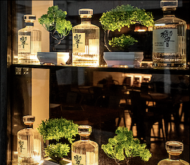
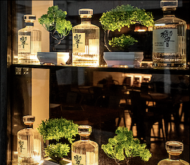

Yoko's Kitchen
Catering
Yoko's kitchen aim is to prepare the very best Japanese food and bring it right
to your door. We can cater for all events, create bespoke menus for your special
occasions and provide professional waiting staff.
We at Yoko's kitchen provide quality catering
services at competitive rates while serving delectable meals that will leave
your guests raving. We develop exceptional dishes that emphasise locally grown
ingredients by paying attention to the seasons. In addition to catering, we also
have our own highly skilled chefs on staff, reliable wait staff, and furniture
and kitchen rentals for rent. Our devoted event specialists can help with catering
and drinks, venue selection, floral arrangements, marquees, and entertainment.
Our team is used to receiving unique requests and is always ready to accommodate
them. Contact us for more information.
- Wedding Catering
- Corporate Parties
- Birthdays
- Other occasions
 
